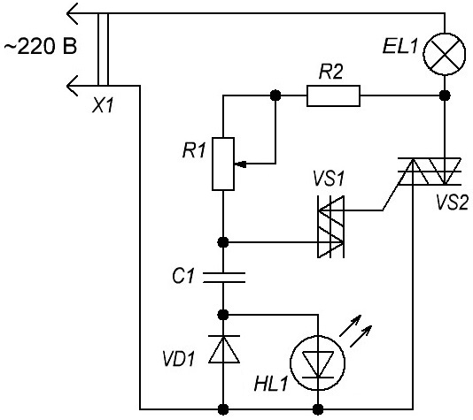
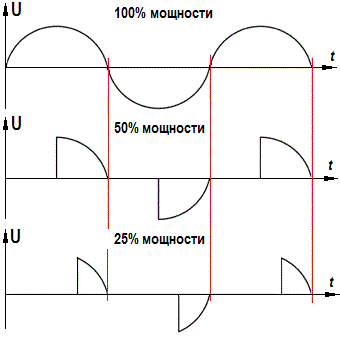

Светорегулятор на симисторе (диммер)
Диммер – электронное устройство, позволяющее управлять напряжением в нагрузке, а значит, и мощностью. Наиболее распространён фазовый способ управления, суть которого состоит в управлении во времени моментом отпирания силового ключа (транзистора, тиристора).
Рассмотрим принцип действия симисторного регулятора, представленного на рисунке 1.

Рис. 1 - Схема светорегулятор на симисторе
Таблица 1
| Обозначение | Наименование | Номинал | Количество | Примечание/замена |
|---|---|---|---|---|
| C1 | Конденсатор | 0,022 мкФ/400 В | 1 | металлоплёночный конденсатор ёмкостью 0,022-0,1 мкФ/400В |
| EL1 | Лампочка накаливания | 100 Вт | 1 | |
| HL1 | Cветодиод | АЛ307 | 1 | |
| R1 | Резистор переменный | 510 кОм/0,5 Вт | 1 | переменный резистор 0,5-1 МОм/0,5 Вт со встроенным выключателем |
| R2 | Резистор постоянный | 4,7 кОм/0,25 Вт | 1 | резистор 4,7-27 кОм/0,25 Вт |
| VD1 | Диод выпрямительный | 1N4148 | 1 | 1N4002 или аналогичные |
| VS1 | Динистор | DB3 | 1 | |
| VS2 | Симистор | BT136-600D | 1 | BT136-600E |
Основной элемент схемы – симистор VS2. Он пропускает ток в обоих направлениях при появлении на управляющем электроде отпирающего импульса. Силовые электроды VS2 подключаются последовательно с нагрузкой. Поэтому ток нагрузки равен току симистора. В цепи управления силовым ключом расположен динистор VS1, открытое и закрытое состояние которого зависит от величины напряжения на его электродах. Элементы R1, R2 и С1 участвуют в цепи заряда конденсатора С1. Диод VD1 и светодиод HL1 образуют цепь индикатора включенного состояния.
При включении диммера симистор закрыт и ток нагрузки не протекает. В момент появления очередной положительной или отрицательной полуволны сетевого напряжения через резисторы R1 и R2 начинает протекать ток. Конденсатор С1 заряжается со скоростью, которая определяется сопротивлением резисторов. Ввиду того что напряжение на конденсаторе не может измениться мгновенно, образуется некоторый фазовый сдвиг между напряжением в сети и на С1.

Рис. 2 - Временные диаграммы работы светорегулятор на симисторе
При достижении на конденсаторе напряжения равного напряжению срабатывания динистора (32 В), последний открывается, что приводит к появлению импульса на управляющем электроде VS2 и его отпиранию. Через нагрузку протекает ток. Симистор находится в открытом состоянии до окончания полуволны (смены полярности) сетевого напряжения. Затем процесс повторяется. За счёт изменения сопротивления R1 происходит увеличение (уменьшение) фазового сдвига. Чем больше сопротивление, тем дольше будет заряжаться конденсатор и тем меньше будет время открытого состояния симистора. Таким образом, вращение ручки регулятора приводит к изменению мощности в нагрузке. Временные диаграммы работы светорегулятор на симисторе показаны на рисунке 2.
Диммер рассчитан на подключение электроприбора мощностью не более 500 Вт. Если мощность нагрузки превышает 150 Вт, то симистор лучше закрепить на радиаторе.
Область применения
Диммеры чаще всего применяют для регулировки яркости ламп освещения. Подключая его в цепь питания галогенных ламп, получают готовое устройство плавного розжига света, которое продлевает срок службы осветительного прибора. Часто диммеры используют для регулировки нагрева паяльника. Регулятор мощности с увеличенной нагрузочной способностью можно использовать для изменения скорости вращения электродрели.
Запрещено подключать диммер к электроприборам, которые содержат электронный блок обработки сигнала (например, блок питания). Исключение составляют светодиодные лампы с возможностью диммирования.
Источники
ledjournal.info - Простая схема диммера на 220 В для сборки своими руками